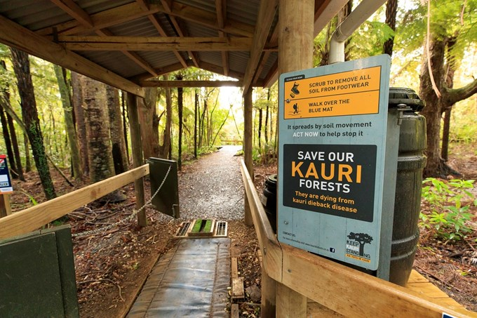

What is being done?
|

|
The groups who are leading the charge for the protection of Kauri Trees are the Ministry for Primary Industries (MPI) and the Department of Conservation (DOC). They have put specific checkpoints along many walks in New Zealand where you must clean shoes and gear and have specifically marked tracks in order to reduce the spreading of the disease. |
What can you do?
|
Other than what Sam the Scientist said, there really isn't much else you can do. The best recommendation to give you is to follow instructions on signs when going for bush walks, or research it further on trustworthy websites. |